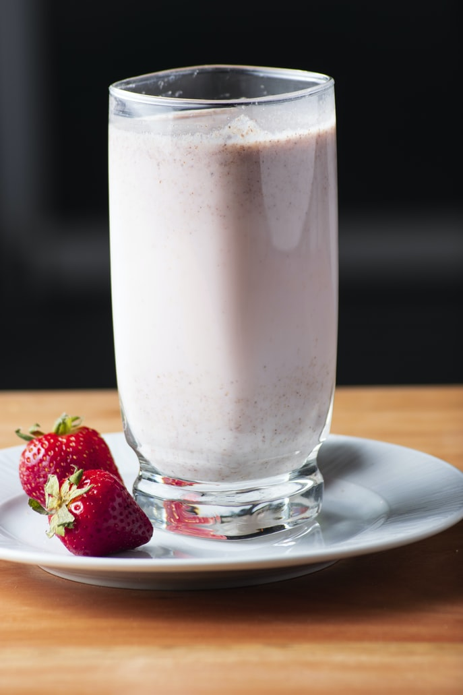

Strawberry Chocolate Chip Shake

The perfect follow up to dinner on cheat day.
It's a timeless flavor combination in the form of a shake. Made with chocolate chip icecream and frozen strawberries, it couldn't get any easier.
Ingredients
- 1 1/2 cups chocolate chip icecream (private select from kroger is my go-to.)
- 1/2 cups frozen strawberries
- Blender
Steps
- Assemble blender (make sure the blades in)
- Scoop icecream into pitcher
- Toss those strawberries in with whatever else you want
- Secure lid, then blend. Go nuts.
- Open blender and scoop carefully into desired eating apparatus with spoon or spatula. Clear blades midway, then continue dispensing.
- Rinse your blender and blades thoroughly (do future you a favor)
- Enjoy your icecream shake guilt free because you probably really want it. Straw and spoon, my friend. Straw and spoon.